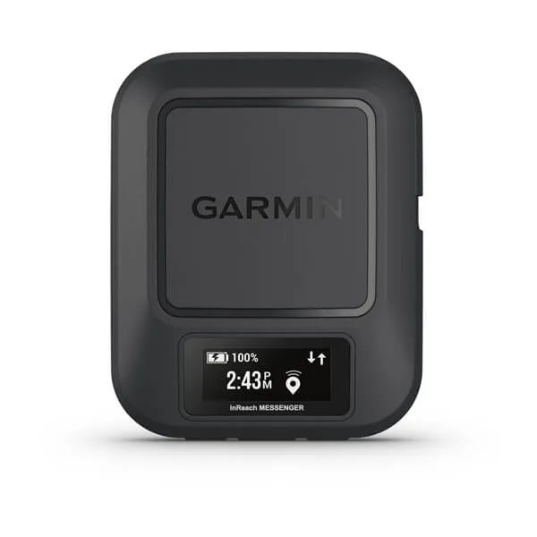
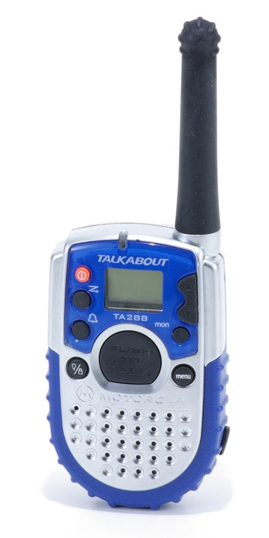
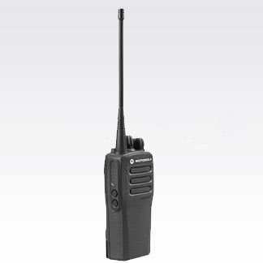
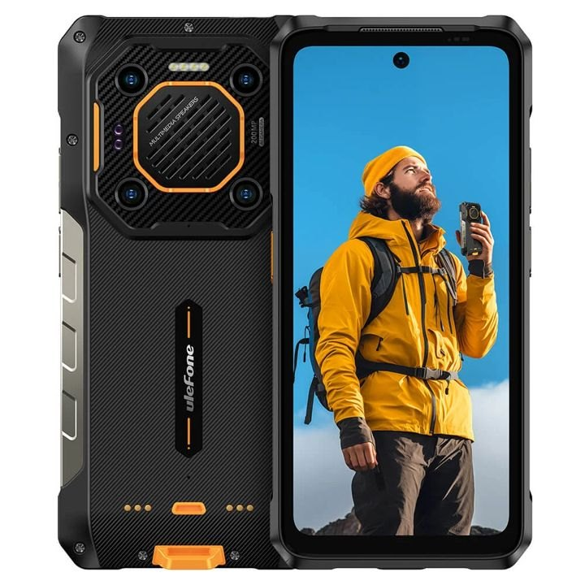
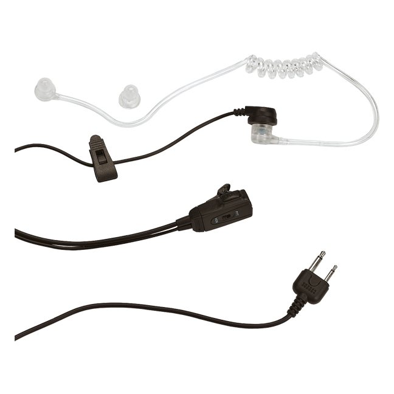
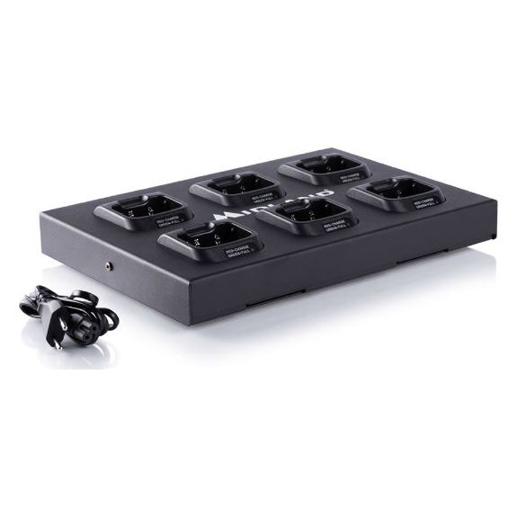
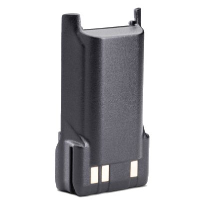
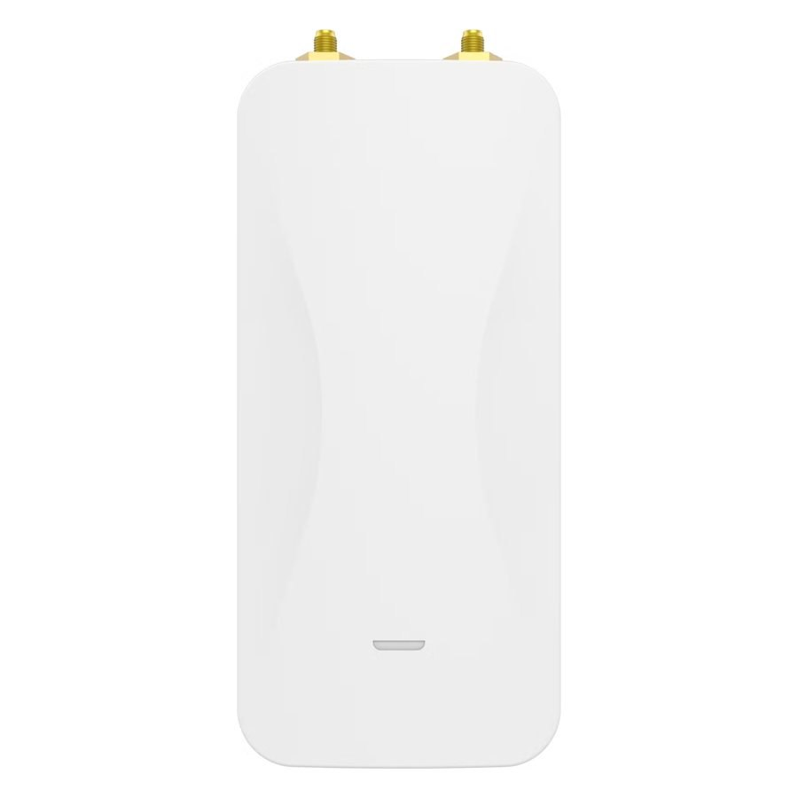
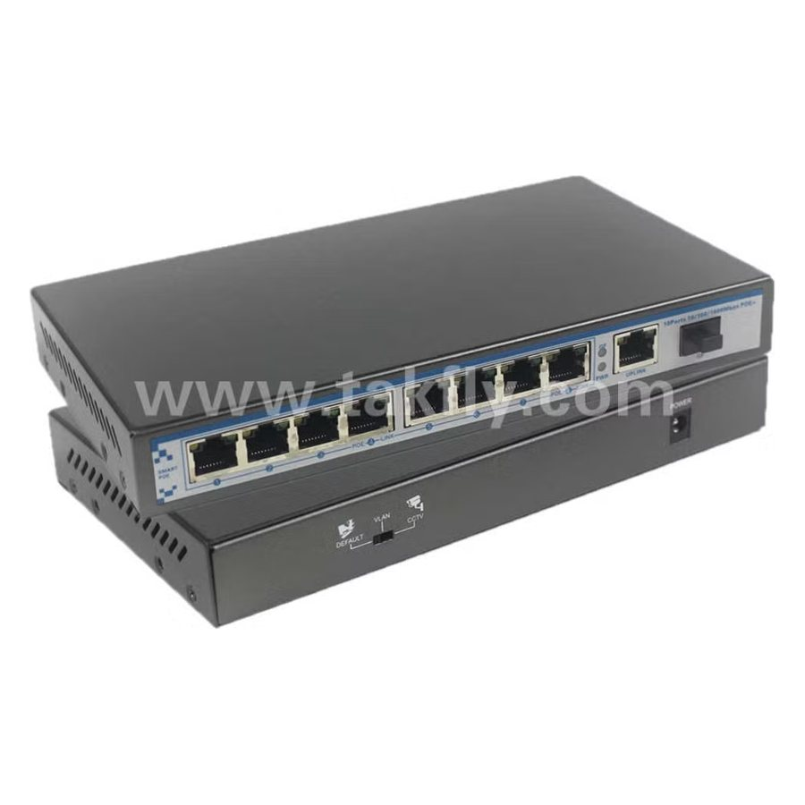

图片仅供参考，展示产品类型。
通信设备
支持卫星语音和短信的三防户外手机
支持卫星语音和短信的坚固5G手机，适用于无移动网络的作业，但没有全球覆盖。
在没有移动网络的工地上它可用于紧急消息，但覆盖并非全球，且服务需要订阅。德国专业用户要求 CE/RED 合规并附网络安全证明、欧盟备件和系统更新，以及德语说明书和欧盟境内服务伙伴。
技术参数
| 移动网络 | 5G |
|---|---|
| 显示屏 | LTPO AMOLED |
| 存储 | 12 GB / 256 GB 至 16 GB / 1 TB |
| 防护等级 | IP68/IP69K |
| 坚固等级 | MIL-STD-810H |
| 海关编码（HS） | 85171300 |
欧盟标准与法规
RED 2014/53/EU无线电设备指令（无线设备CE标志）EN 301 908-1IMT蜂窝网络（LTE/5G）协调标准EN 301 489-52蜂窝移动终端电磁兼容（第52部分）EN 62368-1音视频、信息和通信技术设备安全EN 50566 / EN 62209-1手持及贴身佩戴无线设备的人体电磁暴露（SAR）EN 18031-1联网无线设备网络安全（RED授权条例 (EU) 2022/30）(EU) 2023/1669 + 2023/1670手机能效标签和生态设计（可维修性、更新、备件）(EU) 2023/1542欧盟电池法规EN 60529外壳防护等级（IP代码）
本类别其他产品

天通/北斗卫星电话 （仅限亚太地区）

卫星短信终端 （Iridium SBD, GNSS）

PMR446手持对讲机 （免许可, 工地对讲）免许可模拟手持对讲机，用于工地管理人员、班组和机械操作员之间的沟通。

DMR446数字手持对讲机 （免许可）免许可数字手持对讲机，即使在机械噪声下也能在覆盖边缘保持清晰通话。

4G/LTE PoC公网对讲机 （插SIM卡, 蜂窝网络一键通话）通过移动网络通话的手持对讲机，不受无线电距离限制，可连接多个工地和办事处。

带卫星短信的三防户外手机带卫星短信的坚固5G手机，适合需要在无信号工地发送紧急消息的工地负责人和班组长。

对讲机耳麦/带PTT的耳挂式耳机带领口PTT话筒和2针插头的隐蔽式耳挂耳麦，适用于PMR446、DMR及商用对讲机。

手持对讲机六联座充 （桌面式, 锂电池）桌面式六位座充，适用于锂电池手持对讲机，机型专用卡槽，电源适配器插头可更换。

手持对讲机备用锂电池 （2,000–2,600 mAh, 机型专用）

IP67防水坚固PMR446对讲机套装 （6台, 含六联座充, 耳麦可选）

手持对讲机PTT手咪 （按机型接口）带PTT键的对讲机肩麦。

室外4G LTE路由器 （SIM卡槽、PoE, Cat4 300Mbps）适用于工地和偏远场所的防水LTE CPE。

Wi-Fi 6吸顶AP （双频、PoE, 1500Mbps）适用于办公室、酒店和诊所的PoE吸顶AP。

4K USB会议摄像机 （自动对焦、EPTZ）适用于会议室的USB 3.0摄像机。

Cat6 RJ45跳线 （3米）办公及机柜用网络跳线。
15英寸蓝牙拉杆电池音箱适用于活动、培训和工地的移动扩音。

8口千兆PoE交换机 （SFP上联）适用于摄像机、AP和VoIP的PoE交换机。

4G VoLTE桌面电话 （SIM卡, 固话替代）适用于无固话场所的SIM电话。